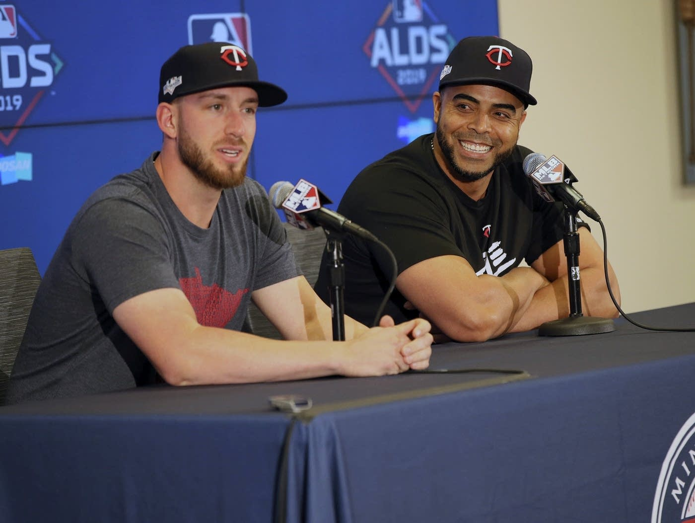
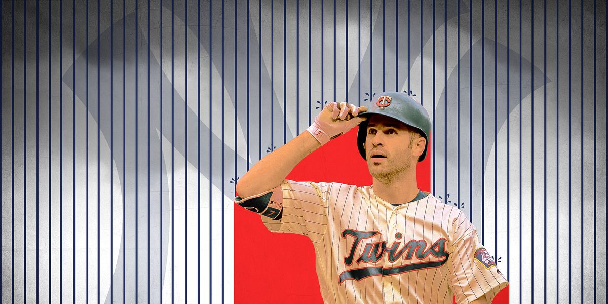

Recent News
‘We like hotels’: Twins prep for playoffs in New York (mpr.org)
"The Minnesota Twins take off for New York on Wednesday for their first playoff series since 2010." - Cody Nelson [Read Full Article]
The Twins Aren’t Just Facing the Yankees in the ALDS. They’re Battling an Astounding Playoff Curse. (theringer.com)
"Take a trip down Minnesota memory lane with us. But be warned: It’s covered in Yankee glory and the rotting carcasses of Minnesota’s postseason dreams." - Zach Kram [Read Full Article]
"At long last, Miguel Sano fulfilling his promise with Twins" (The Star Tribune)
"After many setbacks and frustrations, Sano becomes slugger he wanted to be. The arrival of Nelson Cruz this year helped Sano’s growth process, as the 39-year-old veteran slugger has served as a mentor to his fellow Dominican." - Jim Souhan [Read Full Article]